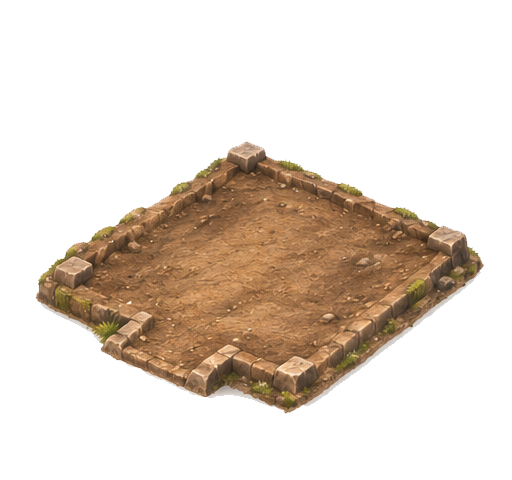
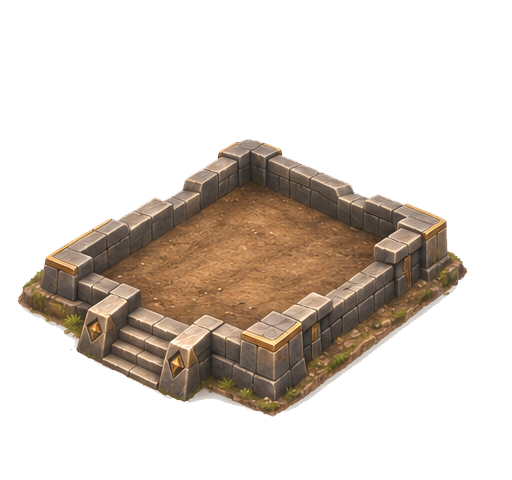
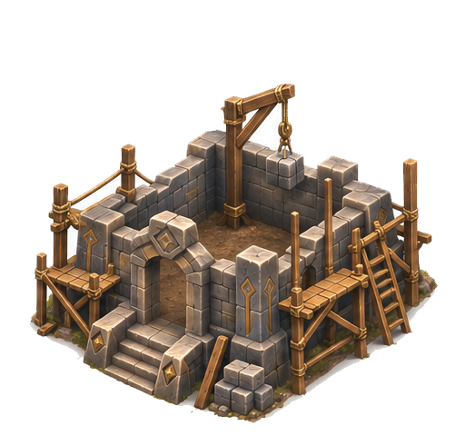
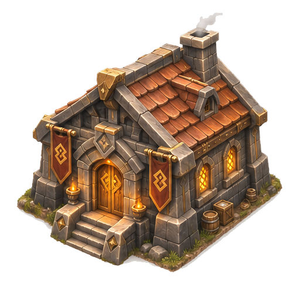
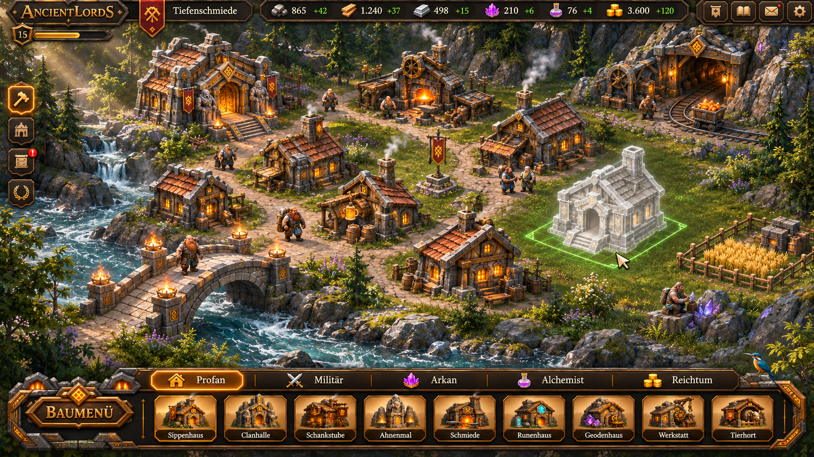

04 – Aufbau
Der Ancient Lord regt sein Volk zum Bauen an und weist jedem Gebäude seinen Platz zu. Die Arbeiter übernehmen die Ausführung. Sobald die Ressourcen für den nächsten Bauabschnitt bereitliegen, führt ein Arbeiter ihn aus. Fehlt Material, ruht der Bau auf dem erreichten Stand.
Der Bau einer Sippenhalle
Jedes Gebäude entsteht in sechs Phasen, von der Bodenplatte bis zum fertigen Bauwerk. Jede Phase kostet ein Sechstel der Gesamtkosten. Die Sippenhalle der Tiefenschmiede zeigt, wie jeder dieser Schritte auf der Karte sichtbar wird.

Phase 1 · Bodenplatte

Phase 2 · Fundament

Phase 3 · Mauerbau

Phase 4 · Rohbau

Phase 5 · Dach

Phase 6 · Fertige Sippenhalle

Baumenü-Kategorien
- Profan
- Militär
- Arkan
- Alchemist
- Reichtum
Profane Tiefenschmiede-Gebäude
- Sippenhaus
- Clanhalle
- Schankstube
- Ahnenmal
- Schmiede
- Runenhaus
- Geodenhaus
- Werkstatt
- Tierhort
Baukosten, Bauzeit und Sicht
Ein Gebäude kann Gold, andere Ressourcen oder beides kosten. Hinzu kommt die Bauzeit. Der Bauplatz muss bebaubar sein. Der Platz muss beim Setzen aktuell sichtbar sein. Liegt er im Nebel, genügt eine frühere Erkundung nicht.
Im Bauprototyp erreicht das Haus nach fünf Zeitabschnitten zu je zehn Sekunden seine fertige Darstellung. Für die Wirtschaftssimulation gilt zusätzlich die im Kapitel beschriebene Versorgung der sechs Bauphasen. Wann ein fehlender Arbeiter oder Materialmangel den Zeitfortschritt anhält und wann die Bodenplatte bezahlt wird, muss vor der Umsetzung festgelegt werden.
Arbeitskräfte und vorläufige Gebäude
Drei Arbeiter holen Baumaterial und errichten Bauwerke. Für Haupthaus und Taverne wird zunächst das Sippenhaus verwendet. Bauleiste und vorläufige Preise
Wann eine Baustelle fortschreitet
Der Bauabschnitt zählt nur die Zeit, in der der zugewiesene Arbeiter an dieser Baustelle arbeitet. Die Wege vom Lager und zu einem anderen Auftrag zählen nicht mit. Bei Unterbrechung bleibt der Fortschritt erhalten. Kehrt der Arbeiter zurück, baut er am erreichten Stand weiter; die bereits bezahlte Lieferung wird nicht erneut abgebucht.
Am Stand des Windows-Builds 8857cec7 bestätigten neun Kontrollen mit den Originalarbeitern und der Originalhöhenkarte die Unterbrechungsregel. Vier Arbeitssekunden blieben bei Abwesenheit erhalten; nach Rückkehr reichten weitere sechs Sekunden für den nächsten Abschnitt. Im Windows-Spiel wurden Taverne und Schmiede regulär fertig. Die weitergehende Sicht- und Netzwerkprüfung aller sechs Sippenhallenphasen ist separat offen. Arbeitsregel und Prüfnachweis